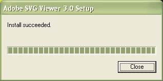

SVG Plug-in Installation Guide
Overview
- Scalable Vector Graphics (SVG) is a language for describing 2D graphics.
- SVG works in Firefox, Chrome, Opera, and most other browsers (without needing to install a plug-in)
- To view SVG in the Internet Explorer browser, you can either
-
Wait for the next release of IE (IE 9), or:
-
Install the SVG plug-in,
developed by the Adobe company
- The SVG Plug-in
- After you install the SVG Viewer you can open SVG files inside IE and the plug-in will display them.
- The most recent version of the plug-in is version 3.0.3.
- The version of the plug-in in the CS labs is version 3.0.0.
- For
COMP303, if you install the plug-in,
use the same version used in the labs, version 3.0.0
SVG Plug-in Installation
- Installation is easy
- After finishing, the below window is displayed showing that the install
has succeeded.
- Click Close to close the window.

Some Example SVG files for Testing
- After the installation, you can view SVG
- Here is some example SVG files, after installing the plug-in you can view them correctly using IE:
Using the SVG Plug-in in Firefox
-
Firefox can display SVG without the need for any plugin.
-
For example, all the examples in the above link will work in Firefox 3/4 without the need for any plug-in
-
If you really want to use the SVG plug-in in the Firefox browser you need to:
- Finish installing the Adobe SVG plug-in
- Go to the Adobe plug-in folder, such as C:\Program Files\Common
Files\Adobe\SVG Viewer 3.0\Plugins
- Copy the two files there (i.e. NPSVG3.dll and NPSVG3.zip) to the
Firefox plug-in directory, which is C:\Program Files\Mozilla
Firefox\plugins
- Tell Firefox not to use its own SVG renderer, so that it
looks for a plug-in instead. To do this,
- type about:config in the location field of the browser
- search for the svg.enabled parameter, and click on it so that it becomes false
- Now you can access and view SVG
in Firefox using the SVG plug-in